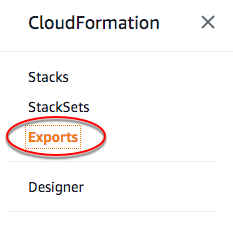

Le traduzioni sono generate tramite traduzione automatica. In caso di conflitto tra il contenuto di una traduzione e la versione originale in Inglese, quest'ultima prevarrà.
Esportazione dei valori di output di uno stack
Per condividere informazioni tra più stack, esporta i valori di output di uno stack. Altri stack nello stesso account AWS e nella stessa Regione possono importare i valori esportati. Ad esempio, un singolo stack di rete può esportare gli ID di una sottorete e di un gruppo di sicurezza per i server Web pubblici. Gli stack con un server Web pubblico possono importare facilmente queste risorse di rete. Non è necessario effettuare l'hard coding degli ID delle risorse nel modello di stack o passare gli ID come parametri di input.
Per esportare un valore di output di uno stack, utilizza il campo Export nella sezione Output del modello dello stack. Per importare questi valori, utilizza la funzione Fn::ImportValue nel modello per gli altri stack. Per una procedura guidata e modelli di esempio, consulta Spiegazione passo per passo: fare riferimento ad output di risorse in un altro stack AWS CloudFormation.
Nota
Quando un altro stack importa un valore di output, non puoi eliminare lo stack che esporta il valore di output o modificare il valore di output esportato. Tutte le importazioni devono essere eliminate prima di poter eliminare lo stack di esportazione o di modificare il valore di output.
Esportazione dei valori di output di uno stack e utilizzo di stack nidificati
Uno stack nidificato è uno stack creato all'interno di un altro stack utilizzando la risorsa AWS::CloudFormation::Stack. Con gli stack nidificati, puoi distribuire e gestire tutte le risorse da un singolo stack. Puoi utilizzare output da uno stack nel gruppo di stack nidificati come input per un altro stack del gruppo. Ciò è diverso dall'esportazione di valori.
Se desideri isolare la condivisione delle informazioni all'interno di un gruppo di stack nidificati, è consigliabile utilizzare stack nidificati. Per condividere le informazioni con altri stack (non solo nel gruppo di stack nidificati), esporta i valori. Ad esempio, puoi creare un singolo stack con una sottorete ed esportarne l'ID. Altri stack possono utilizzare questa sottorete importandone l'ID; non è necessario che ogni stack crei una sottorete propria. Finché gli stack importano l'ID della sottorete, non è possibile modificarlo o eliminarlo.
Elencazione dei valori di output esportati
Per visualizzare i valori che puoi importare, elenca tutti i valori di output esportati utilizzando la console AWS CloudFormation, la AWS CLI o l'API AWS CloudFormation. AWS CloudFormation mostra i nomi e i valori degli output esportati per la Regione corrente, nonché lo stack da cui vengono esportati gli output. Per fare riferimento a un valore di output esportato in un modello di stack, utilizza il nome di esportazione e la funzione Fn::ImportValue.
Per elencare i valori di output esportati (console)
-
Nella console AWS CloudFormation
, dal riquadro di navigazione CloudFormation, scegliere Exports (Esportazioni). 
Per elencare i valori di output esportati (AWS CLI)
-
Esegui il comando
aws cloudformation list-exports.
Per elencare i valori di output esportati (API)
-
Esegui l'operazione
ListExportsAPI.